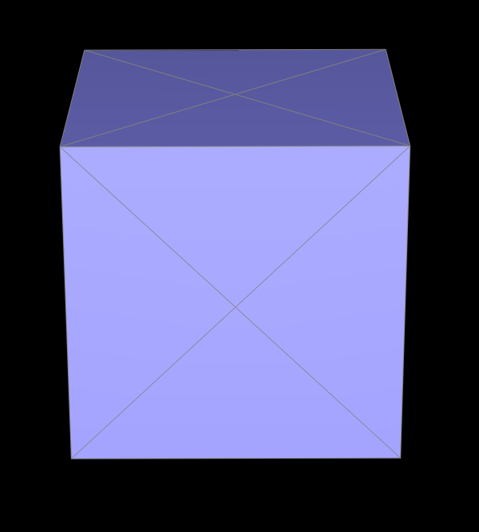
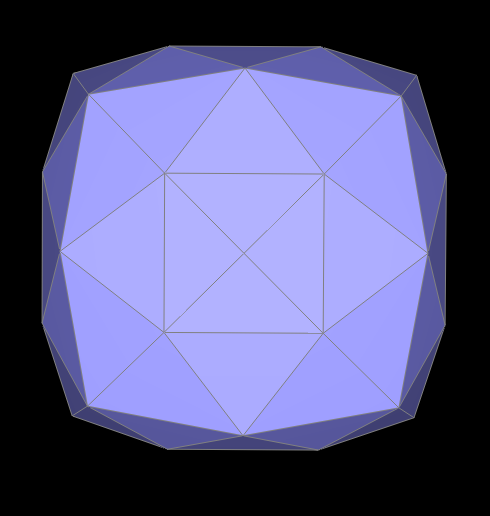
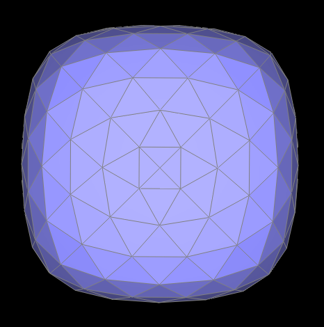

CS184/284A Spring 2025 Homework 2 Write-Up
Link to webpage: https://cal-cs184-student.github.io/hw-webpages-alexwzhu
Link to GitHub repository: https://github.com/cal-cs184-student/hw2-meshedit-alexzhu
Overview
In this homework, I implemented some geometric modeling concepts used for evaluating Bezier curves and manipulating triangle meshes. The first section of the homework involves using de Casteljau's algorithm to evaluate points on a Bezier curve. My implementation was then extended to evaluate Bezier surfaces. The second section focused on mesh processing using halfedge structures. I implemented smooth shading, edge flips and splits, and loop subdivision. For the Bezier curve/surface implementation, I thought it was interesting how the 1D de Casteljau's algorithm could be used in a 2D context to evaluate points on a Bezier surface. From the later half of the homework, I learned that subdivision quality depends heavily on mesh connectivity. Different triangulation configurations on the same shape can produce drastically different behavior. More generally, I learned from this homework the importance of breaking down problems into subproblems: saving temporary states, modifying topology, committing positions. Implementing each problem in distinct stages made debugging much easier.Section I: Bezier Curves and Surfaces
Part 1: Bezier curves with 1D de Casteljau subdivision
De Casteljiau’s algorithm is a recursive method used to evaluate and construct Bezier curves. The algorithm interpolates between control points and repeatedly interpolates on the results. Each call reduces k control points to k - 1 points. This recursive process continues until there is only one point left. That point on the bezier curve corresponds to the position of the curve at a given parameter value t. Approach/Implementation: For this part, I implemented one step of de Casteljiau’s algorithm to evaluate Bezier curves at some given parameter value t. The functionBezierCurve::evaluateStep() takes a vector of 2D control points and calculates a new set of intermediate control points by linearly interpolating between each adjacent point. My implementation iterated through the input vector and computed the interpolated point for each neighboring pair; the results were stored in a new vector. The function returns this new vector. Each call to the function performs one step of interpolation, reducing the number of points by one. The last call to the function eventually gives a single point on the Bezier curve at parameter t.
Issues: One issue I encountered was my program erroring because I was iterating through the entire input vector. This was wrong because I was indexing outside of the actual vector when the loop got to the last element in the vector. I fixed this by stopping the loop 1 element before the last element of the vector.
Below are snapshots of each step of the evaluation from original control points down to final evaluated point of a Bezier curve with 6 control points.

|

|

|

|

|

|

Part 2: Bezier surfaces with separable 1D de Casteljau
De Casteljiau’s algorithm extends from Bezier curves to Bezier surfaces by applying the same 1D interpolation in both directions. For a Bezier surface, the control points are arranged in a 2D grid rather than just a line. The goal is to evaluate a point on the surface at two parameters (u, v) rather than just 1 parameter t. You treat each row of control points as its own Bezier curve problem and apply de Casteljiau with parameter u. This produces a set of new intermediate points forming another 1D Bezier curve that is then evaluated again using de Casteljiau’s with parameter value v. The result is a single point that lies on the Bezier surface. In my implementation, I reused the same interpolation logic from part 1 on a Vector3D object inBezierPatch::evaluateStep(). BezierPatch::evaluate1D() repeatedly calls evaluateStep to get the last remaining point. Finally, BezierPatch::evaluate(u, v) uses evaluate1D to find the position on the Bezier surface at (u, v).

Section II: Triangle Meshes and Half-Edge Data Structure
Part 3: Area-weighted vertex normals
The goal of Part 3 is to compute per-vertex normals for smooth shading. Without this, the renderer uses per-face normals, which creates a faceted appearance. In Vertex::normal(), I initialize an accumulator N = (0,0,0) and use a halfedge iterator to circulate around the one-ring of the current vertex. Starting from halfedge(), I repeatedly advance with hedge = hedge->twin()->next(), which moves to the next face incident to the same vertex. For each non-boundary face, I form two local edge vectors from the current vertex,
and add cross(e1, e2) to N. This cross product contributes a direction equal to the face normal and a magnitude proportional to triangle area, so summing these terms gives an area-weighted average automatically (larger triangles influence the result more). After completing the loop (detected when the iterator returns to the start halfedge), I normalize N and return N.unit(). I also skip boundary faces via if (!f->isBoundary()) so invalid boundary geometry does not affect the normal computation. A key debugging point was iterator handling: halfedge iterators are not nullable booleans, so traversal must rely on explicit loop structure and iterator equality checks rather than truthy/null checks.

|

|
Part 4: Edge flip
My approach for implementing edge flip was to operate on the local neighborhood of one non-boundary edge. Given a valid edge, I first identified the 4 vertices, 2 adjacent faces, and 6 halfedges involved in the two incident triangles. The flip replaces the original diagonal with the other diagonal, i.e., it reconnects the two opposite vertices that were previously not directly connected.
A key implementation detail is that flipping is not just changing one edge endpoint pair.
I had to reassign all local halfedge connectivity so the neighborhood remains consistent: each of the 6 halfedges needs correct
next, twin, vertex, edge, and face references.
I also updated representative pointers on mesh elements (face->halfedge, vertex->halfedge, and edge->halfedge) to match the new configuration.
The main bug I hit was initially updating only the flipped edge while leaving neighboring halfedges unchanged. That left stale references to the old topology, which caused invalid traversals and occasional crashes. Rewiring the entire local neighborhood fixed this.
The snapshots below showcase results of edge flips on teapot image.

|

|

|
Part 5: Edge split
My approach for implementing edge split was to again start from a valid non-boundary edge and gather its local neighborhood (4 vertices, 2 faces, and 6 existing halfedges). Splitting this edge inserts one midpoint vertex and replaces the two original triangles with four smaller triangles.
Topologically, each split creates: 1 new vertex, 3 new edges, 2 new faces, and 6 new halfedges. I place the new vertex at the midpoint of the original edge: \[ \mathbf{m} = \frac{\mathbf{b} + \mathbf{c}}{2}. \] The original edge is reused as one of the two edges along the original direction, while the new elements complete the 4-triangle configuration.
After allocation, I rewired connectivity by updating all relevant pointers so each new face forms a valid 3-halfedge cycle, each halfedge points to the correct source vertex, and each halfedge pair references the correct edge/face relationship. I then updated representative pointers on vertices, faces, and edges.
Because split introduces many new elements, I made a bunch of tiny pointer mistakes.
I used check_for heavily to verify that:
(1) the correct halfedges reference the new midpoint vertex, and
(2) each edge is referenced by exactly two halfedges.
The snapshots below showcase results of both edge splits and edge flips on teapot image.

|

|

|
Part 6: Loop subdivision for mesh upsampling
My Loop subdivision implementation uses the following steps: (1) compute all target positions on the original mesh, (2) update topology, and (3) commit final positions. This separation prevents mixing old and newly modified neighborhoods during computation.
First, for each original vertex, I traverse its one-ring neighbors with halfedges, sum neighbor positions, and compute the Loop vertex update:
\[
\mathbf{v}' = (1 - n u)\mathbf{v} + u \sum_{i=1}^{n}\mathbf{v}_i,
\quad
u =
\begin{cases}
\frac{3}{16}, & n = 3 \\
\frac{3}{8n}, & n > 3
\end{cases}
\]
where \(n\) is the number of neighboring vertices. I store this in Vertex::newPosition and mark original vertices with isNew = false.
Second, for each original edge with endpoints \(A,B\) and opposite vertices \(C,D\), I compute the Loop midpoint target
\[
\mathbf{m}' = \frac{3}{8}(A+B) + \frac{1}{8}(C+D),
\]
and store it in Edge::newPosition.
Third, I split only the original edges by first saving a snapshot:
std::vector<EdgeIter> originalEdges.
This is critical because splitEdge creates new edges; iterating directly over a growing edge list can cause accidental re-splitting in the same pass.
For each split edge, I mark the inserted midpoint vertex as new and assign:
m->newPosition = e->newPosition.
Next, I flip only edges marked as new that connect one old vertex and one new vertex.
This restores the standard Loop connectivity pattern after splitting.
Finally, I copy newPosition into position for all vertices.
Debugging note: the most important fix was splitting from a fixed snapshot of original edges instead of traversing the live edge container while it was being modified. This guaranteed exactly one split per original edge and made the subdivision result stable.
Mesh behavior after loop subdivision: I noticed that loop subdivision will force sharp corners and edges to get rounded off after upsampling. Take for instance the series of subdivisions below.

|

|

|
I was able to reduce this by pre-splitting some of the edges. Below, I add a bunch of edges to the top left half of the original square. I find that adding supporting edges near edges or sharp corners can help preserve the original shape a bit longer.

|

|

|
To reduce the asymmetry that appeared after repeated subdivision, I pre-processed the cube by splitting each face once in a symmetric pattern. In the original cube triangulation, each face had a single diagonal, which introduced directional bias into the local connectivity. Because Loop subdivision updates depend on one-ring neighborhood structure (not just vertex positions), this bias accumulates over iterations and appears as visible asymmetry. After symmetric pre-splitting, the one-ring neighborhoods are more uniform, so updates are applied more evenly and the subdivided cube remains noticeably more symmetric. The images below show results on this symmetrically pre-split cube.
|
 |
 |
 |